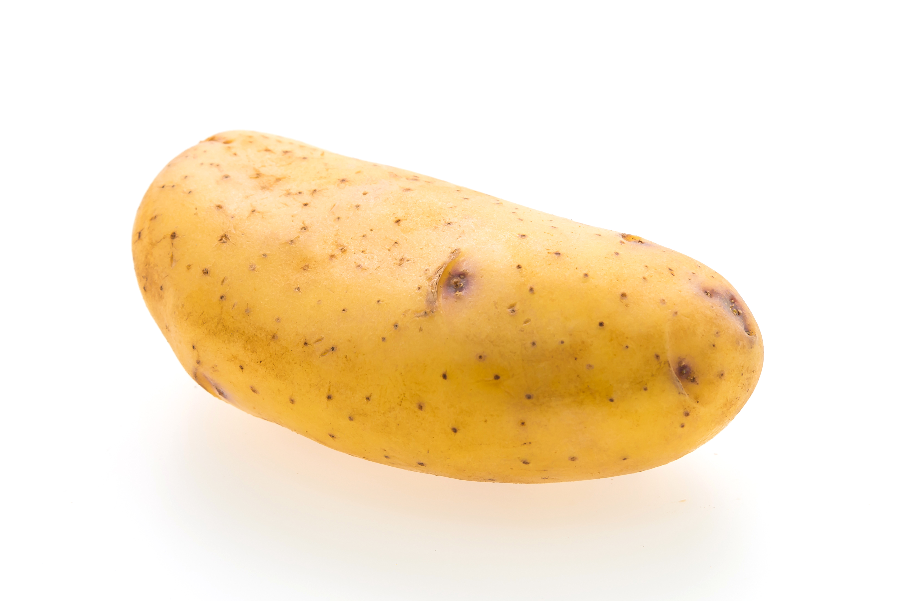

🥔 Companion
🌗
🥔 Your Companion
Save
Your companion is here to listen and share emotions with you.

🔍
Counting dots...
😊
😢
🤩
😌
😲
Interactions: 0
Show Care 🤲
Comfort 🫶
Share Trauma 😢
Dance Together 💃
Tell Story 📖
Watch Comedy Show 🎭
Mood: 🥔 Content
"Hello, I'm here to listen and share with you..."
Emotional Insights
Personality Traits
Recent Memories